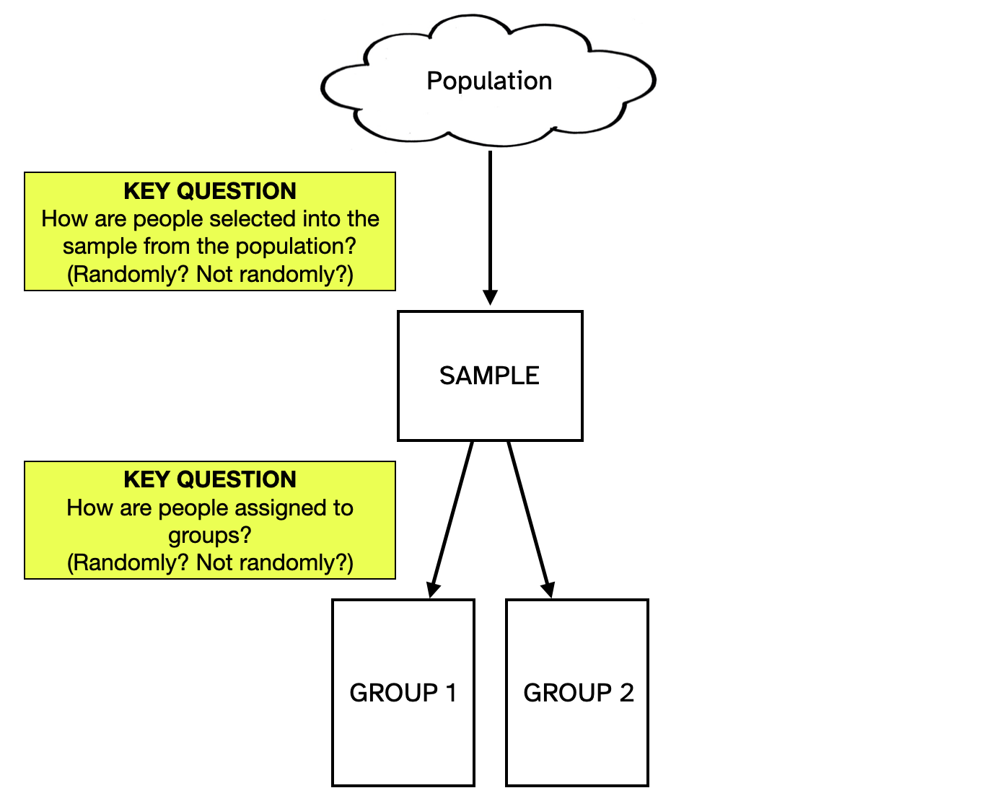

Modeling Variation to Compare Groups
When we compare groups we now need to consider two different sources of variation that impact the differences in summary measures: experimental variation and sampling variation. In practice, these sources of variation are a function of the study design—how participants are selected from the larger population, and how they are assigned to groups.
If we dichotomize the answers to these two key questions as either “randomly” or “not randomly”, this results in four potential study designs. These designs are listed in Table 1 along with the source of variation that we need to model for each of them.
| How are people selected into the sample from the population? | How are people assigned to groups? | Variation to be Modeled |
|---|---|---|
| Random selection | Random assignment | Sampling variation (from selection from the population) |
| Non-random selection | Random assignment | Experimental variation (from assignment to groups) |
| Random selection | Non-random assignment | Sampling variation (from selection from the population) |
| Non-random selection | Non-random assignment | Experimental variation (from assignment to groups) |
Lastly, we indicate the test and the corresponding TinkerPlots sampler for modeling these sources of variation in Table 2.
| Variation Modeled | Test | TinkerPlots Sampler |
|---|---|---|
| Experimental variation (from assignment to groups) |
Randomization | Two sampling devices: (1) outcomes (sampled without replacement); and (2) group labels (sampled without replacement) |
| Sampling variation (from selection from the population) |
Bootstrap | Two sampling devices: (1) outcomes (sampled with replacement); and (2) group labels (sampled without replacement) |